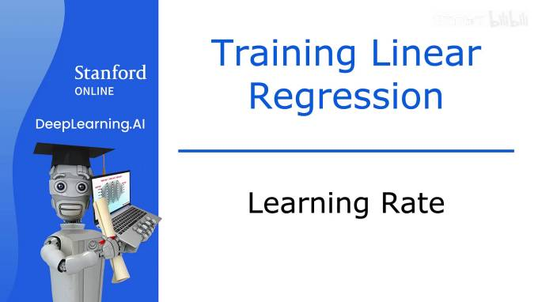
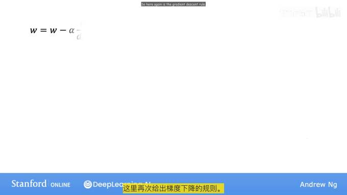
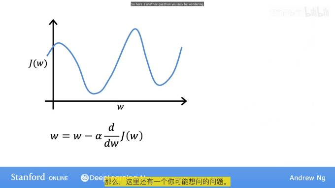
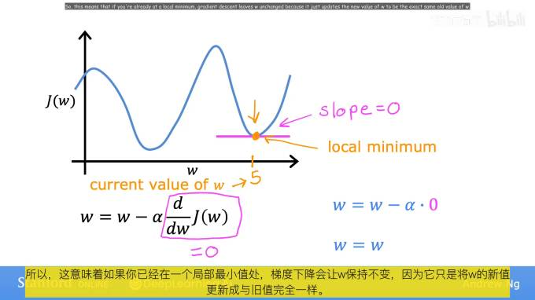
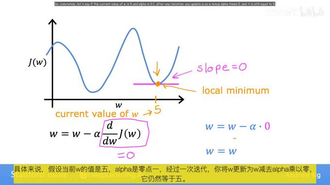
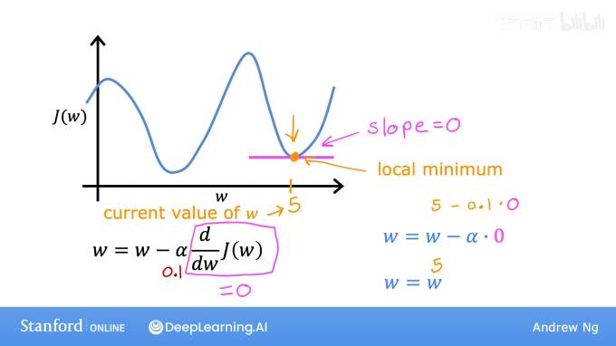
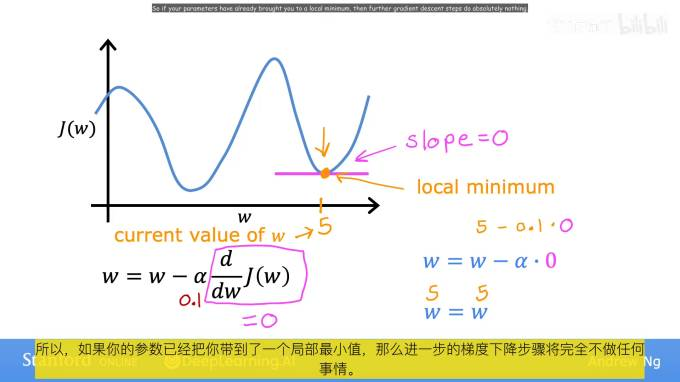
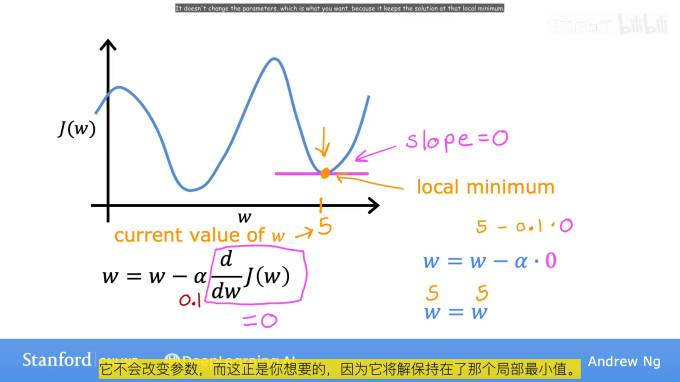
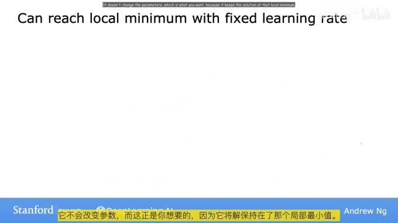

学习率 alpha 的选择，将对你实现梯度下降的效率产生巨大影响。00:02

如果 alpha，也就是学习率，选择不当，梯度下降甚至可能根本无法工作。00:10
在本期视频中，让我们更深入地了解一下学习率。00:17
这也将帮助你在实现梯度下降时选择更好的学习率。00:22
这里再次给出梯度下降的规则。00:29

w 被更新为 w 减去学习率 alpha 乘以导数项。00:33
为了更了解学习率 alpha 的作用，我们来看看如果学习率 alpha 太小或太大，分别会发生什么。00:39
对于学习率太小的情况，这里有一张图，横轴是 W，纵轴是代价 J。00:49
让我们在这一点开始梯度下降。01:05
如果学习率太小，那么发生的情况是，你用某个非常非常非常小的数乘以导数项。01:09
所以你将乘以一个非常小的数 alpha，比如零点零零零零零零一。01:19
结果你最终迈出了像那样极小的一步。01:27
然后，从这一点开始，你将再迈出另一个微乎其微的小碎步。01:32
但因为学习率太小，第二步也同样微不足道。01:39
这个过程的结果是，你最终确实降低了代价 J，但速度慢得令人难以置信。01:46
所以，又一步，再一步，又一步极小的步子，直到你最终接近最小值。01:53
但你可能注意到了，你需要非常多的步数才能到达最小值。02:02
所以总结一下，如果学习率太小，梯度下降能工作，但会很慢。02:08
它会花费非常长的时间，因为它要迈这些极小极小的小碎步，并且需要很多步才能接近最小值。02:16
现在，让我们看另一种情况。02:26
如果学习率太大，会发生什么？02:29
假设我们在 W 等于这个值的位置开始梯度下降。02:36
实际上，它已经相当接近最小值了。02:42
导数指向右侧，但如果学习率太大，你就会迈一个巨大的步子更新 W，一下子到达这边。02:46
所以你从左边这个点一路到了右边这个点，它增加了，因为它起始于这里的这个值，但在一步之后，它实际上增加到了这里的这个值。03:06
现在，这个新点处的导数指示要减小 w。03:23
但当学习率太大时，你可能会迈出一大步，从这里一直走到这边。03:29
那么现在你到了这里的这个点。03:37
再次，如果学习率太大，你在下一次迭代中会再迈出巨大的一步，并再次远远越过最小值。03:40
所以你现在到了右边这个点，然后你再做一次更新，最终一路到了这里。03:50
你可能注意到了，你实际上离最小值越来越远。04:03
所以，如果学习率太大，梯度下降可能会越过目标，甚至可能永远无法到达最小值。04:09
另一种说法是，梯度下降可能无法收敛，甚至可能发散。04:17
那么，这里还有一个你可能想问的问题。04:27

如果你的参数 w 已经在这个点上了，也就是你的代价 J 已经处于一个局部最小值，会怎样？04:31
你认为，如果你已经到达了一个最小值，梯度下降的一步会做什么？04:41
我刚学这些内容的时候，也花了很长时间才想明白。04:52
假设你有一些代价函数 J，你在这里看到的这个不是平方误差代价函数。05:00
这个代价函数有两个局部最小值，对应你在这里看到的这两个值。05:09
现在，假设经过一定步数的梯度下降后，你的参数 w 在这边，比如等于五。05:17
这意味着你位于代价函数 J 上的这个点，而这恰巧是一个局部最小值。05:31
结果是，如果你在这一点画一条函数的切线，这条线的斜率是零。05:38
因此，对于当前 w 值，这里的导数项等于零。05:45
所以你的梯度下降更新变成了，w 被更新为 w 减去学习率乘以零。05:52
这里，那是因为导数项等于零。06:01
这等同于说，让我们将 w 设为等于 w。06:06
所以，这意味着如果你已经在一个局部最小值处，梯度下降会让 w 保持不变，因为它只是将 w 的新值更新成与旧值完全一样。06:12

具体来说，假设当前 w 的值是五，alpha 是零点一，经过一次迭代，你将 w 更新为 w 减去 alpha 乘以零，它仍然等于五。h。06:26


所以，如果你的参数已经把你带到了一个局部最小值，那么进一步的梯度下降步骤将完全不做任何。06:44

它不会改变参数，而这正是你想要的，因为它将解保持在了那个局部最小值。06:54


这也解释了为什么即使学习率 alpha 固定，梯度下降也能到达一个局部最小值。07:02
为了说明这一点，让我们看另一个例子。07:11
这是我们要最小化的代价函数 J 括号 w。07:15
让我们在这上方的这个点初始化梯度下降。07:20
如果我们进行一次更新，也许它会带我们到那个点。07:26
因为这个导数相当大，梯度下降迈出了相对较大的一步，对吧？07:32
现在，我们在这第二个点，再进行另一步。07:40
你可能注意到，斜率不像在第一个点那样陡了。07:45
因此，下一步更新的步幅将不会像第一步那样大。07:52
现在，我们在这第三个点，导数比上一步时更小了，我们将迈出更小的一步。07:58
当我们接近最小值时，导数越来越接近零。08:09
所以随着我们运行梯度下降，最终我们会迈出非常小的步子，直到你最终到达一个局部最小值。08:15
总结一下，当我们靠近局部最小值时，梯度下降会自动迈出更小的步子。08:24
那是因为当我们接近局部最小值时，导数会自动变小。08:31
这意味着更新步幅也会自动变小，即使学习率 alpha 保持在某个固定值。08:38
你可以用它来尝试最小化任何代价函数 J，不仅仅是我们在用的线性回归的均方误差代价函数。08:50
在下期视频中，我们将回到函数 J，并将其确切地设为线性回归模型的代价函数，也就是我们早先得出的均方误差代价函数。09:00
将梯度下降与这个代价函数结合起来，就将带给你第一个学习算法。09:13